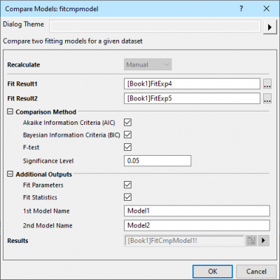

Zwei Modelle vergleichen (nur Pro)
PostFit-CompareFitFunc-Dialog
Dieses Hilfsmittel wird verwendet, um zwei Anpassungsergebnisse der gleichen Daten mit Hilfe von zwei unterschiedlichen Anpassungsfunktionen zu vergleichen. Dies schließt die Ergebnisse aus den globalen Anpassungsoperationen mit ein, bei denen mehrere Datensätze gleichzeitig angepasst werden, mit oder ohne gemeinsam genutzte Parameter (erfordert OriginPro 2017).
Es sind drei Tests verfügbar, um das beste Modell zu bestimmen: F-Test, Akaikes Informationskriterium (AIC) und Bayessches Informationskriterium (BIC).
Um dieses Hilfsmittel zu verwenden:
- Führen Sie eine Anpassung mit Hilfe zwei unterschiedlicher Anpassungsfunktionen für die gleichen Anpassungsdaten durch und erstellen Sie zwei Anpassungsberichte.
- Wählen Sie Analyse: Anpassen: Modelle vergleichen im Origin-Menü.
-
- 
 |
Beispiel:
Angenommen, wir haben einen Datensatz und möchten sehen, welches Modell der beste Fit für ihn ist.
Kandidatmodelle sind:
ExpDec1: 
ExpDec2: 
Schritte:
1. Importieren Sie Exponential Growth.dat aus dem Ordner \Samples\Curve Fitting.
2. Markieren Sie Spalte Col(B) und wählen Sie Analyse: Anpassen: Nichtlinearer Fit im Menü aus, um den Dialog zu öffnen. Setzen Sie die Funktion auf ExpDec1. Klicken Sie auf Fit, um das Ergebnisblatt zu erstellen.
3. Öffnen Sie den Dialog NLFit erneut und setzen Sie die Funktion dieses Mal auf ExpDec2. Klicken Sie auf Fit, um das Ergebnisblatt zu erstellen.
4. Wählen Sie Analyse: Anpassen: Modelle vergleichen, um den Dialog zu öffnen.
5. Klicken Sie auf die Schaltfläche Durchsuchen, um den Ergebnisbaum-Browser zu öffnen, und wählen Sie 1 Element für Fit Result1.
6. Wiederholen Sie die gleiche Operation, um ein anderes Element für Fit Result2 auszuwählen.
7. Wählen Sie alle Optionen in der GUI und klicken Sie auf OK.
8. Wir können aus der Tabelle des F-Tests und des AIC-Ergebnisses die Schlussfolgerung ziehen, dass die ExpDec1-Funktion das am besten angepasste Modell ist.
|
Bedienelemente des Dialogs
Neu berechnen
Legen Sie fest, wie der Wert neu berechnet und aktualisiert wird, wenn sich die Eingangsdaten ändern.
| Kein |
Die Ausgabe ist nicht mit den Quelldaten verbunden. Jegliche Änderungen an den Quelldaten führen zu keiner Aktualisierung des Ergebnisses.
|
| Auto |
Die Ergebnisse werden automatisch aktualisiert, wenn sich die Quelldaten ändern.
|
| Manuell |
Die Ausgabe wird nicht automatisch aktualisiert, wenn sich die Quelldaten ändern. Sie müssen die Aktualisierung selbst manuell veranlassen.
|
Anpassungsergebnis 1
Legen Sie das erste Anpassungsergebnis fest. Klicken Sie auf die Schaltfläche des Ergebnisbaum-Browser  rechts vom Feld Anpassungsergebnis 1. Alle Anpassungsberichte werden im Ergebnisbaum-Browser angezeigt. Sie können einen Anpassungsbericht als Anpassungsergebnis 1 im Dialog Ergebnisbaum-Browser wählen.
rechts vom Feld Anpassungsergebnis 1. Alle Anpassungsberichte werden im Ergebnisbaum-Browser angezeigt. Sie können einen Anpassungsbericht als Anpassungsergebnis 1 im Dialog Ergebnisbaum-Browser wählen.
Anpassungsergebnis 2
Legen Sie das zweite Anpassungsergebnis fest. Klicken Sie auf die Schaltfläche des Ergebnisbaum-Browsers rechts vom Feld Fit Result2. Nur Anpassungsberichte, deren Anpassungsdaten die gleichen wie in Fit Result1' sind, werden im Ergebnisbaum-Browser angezeigt. Sie können einen Anpassungsbericht als Anpassungsergebnis 2 im Dialog Ergebnisbaum-Browser wählen.
Beachten Sie, dass Origin das Vergleichen eines Anpassungsergebnisses, erhalten durch den LM-Algorithmus (Levenberg/Marquardt), mit einem Anpassungsergebnis, das mit Hilfe des ODR-Algorithmus (Orthogonal Distance Regression) ermittelt wurde, nicht unterstützt. Wenn Fit Result1 zum Beispiel eine explizite Funktion ist, die den LM-Algorithmus verwendet, wird das Anpassungsergebnis einer impliziten Funktion (die ODR verwendet) für die gleichen Daten nicht im Dialog Ergebnisbaum-Browser des Fit Result2' gezeigt.
Vergleichsmethode
Legen Sie die Methoden fest, um zu bestimmen, welche Anpassungsfunktion besser ist.
| Akaikes Informationskriterium (AIC) |
Verwenden Sie einen Test mit Akaikes Informationskriterium (AIC) für den Vergleich.
|
| Bayessches Informationskriterium (BIC) |
Verwenden Sie einen Test mit dem Bayesschen Informationskriterium (BIC) für den Vergleich.
|
| F-Test |
Verwenden Sie einen F-Test für den Vergleich. Durch Aktivieren des Kontrollkästchens wird ein Feld für das Signifikanzniveau hinzugefügt.
|
| Signifikanzniveau |
Der Standardwert ist 0,05. Werte zwischen 0 und 1 werden unterstützt.
|
Zusätzliche Ausgaben
Legen Sie fest, ob die Anpassungstabellen ausgegeben werden sollen.
| Fit-Parameter |
Legen Sie fest, ob die Tabelle der Fit-Parameter für jedes Anpassungsmodell ausgegeben werden soll.
|
| Statistik zum Fit |
Legen Sie fest, ob die Tabelle der Fit-Statistik für jedes Anpassungsmodell ausgegeben werden soll.
|
| 1. Modellname |
Legen Sie einen Namen fest, der in der Ergebnistabelle für das erste Modell relativ zum Fit Result1 angezeigt wird. Der Standardname ist Model 1. |
| 2. Modellname |
Legen Sie einen Namen fest, der in der Ergebnistabelle für das zweite Modell relativ zum Fit Result2 angezeigt wird. Der Standardname ist Model 2. |
Ergebnisse
Legen Sie das auszugebende Berichtsblatt für das Vergleichsergebnis fest.
Siehe: Ergebnisse ausgeben